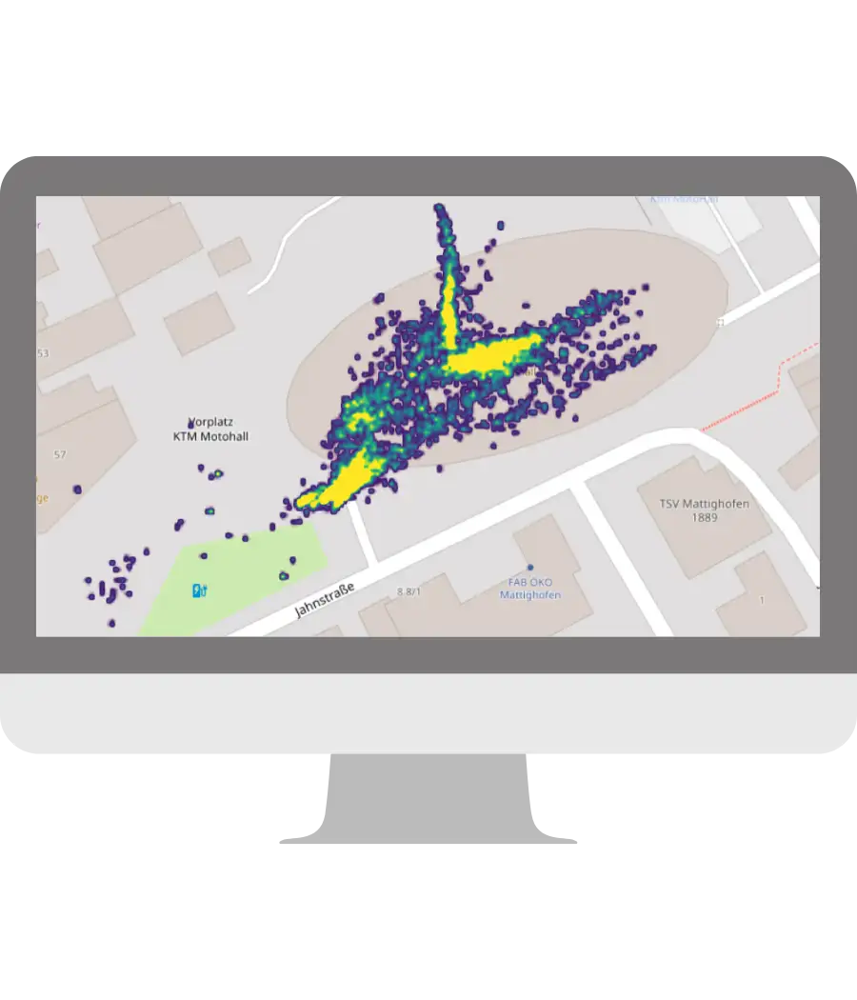

Elementos y servicios multimedia que se pueden integrar en una audioguía Nubart
Además de las pistas de audio, la flexibilidad de las audioguías multimedia Nubart permite la integración de elementos de texto, imágenes, vídeos, archivos descargables, enlaces y muchos más. Todos estos elementos pueden integrarse en cualquier orden.
Emplea el índice o recorre esta página para ver nuestra lista de elementos multimedia. ¡Imagina lo completa que quedará tu audioguía con todos ellos!
Sistema modular
Es posible que tu centro tenga varias exposiciones al mismo tiempo y que debas mostrar más de una audioguía.
Para hacerlo posible ofrecemos un sistema modular que funciona como una muñeca rusa: una misma audioguía puede contener muchas otras. Incluso puedes incorporar módulos de otro tipo, como nuestro sistema de guiado de grupos.
En cada uno de los módulos puedes incorporar cualquiera de los elementos listados a continuación:
Sin cargo adicionalModo offline
En caso necesario, las pistas de audio, las imágenes y los mapas pueden precargarse en la memoria del smartphone para que la audioguía pueda utilizarse también en zonas sin internet o con una conexión deficiente. ¡Y sin necesidad de descargar ninguna app!
Nuestro modo sin conexión puede aplicarse a toda la audioguía, o bien de manera parcial: sólo a determinados módulos o a puntos de interés que se encuentren en una zona muerta.
Sin cargo adicionalBotón desplegable "más información"
El propietario de una tarjeta Nubart puede volver a utilizar la audioguía en casa siempre que quiera. Merece la pena aprovechar esta circunstancia y ofrecer un segundo nivel de profundización sobre la exposición sin distraer la atención del recorrido propiamente dicho durante la visita. Nuestro botón desplegable "Más información" lo hace posible.
Detrás de este botón puedes colocar cualquier tipo de información multimedia: más audios, vídeos, fotos, PDFs...
Sin cargo adicionalAudioguías con lista de intereses
¡Deje que su visitante elija lo que de verdad le interesa escuchar!
Nuestro sistema de audioguías o tags permite limitar el contenido que se muestra a los intereses del usuario.
Esto resulta especialmente interesante en ferias comerciales, pero también en museos muy grandes con audioguías muy complejas.
Si cambian de opinión, los usuarios siempre pueden seleccionar una nueva lista de intereses. El número de etiquetas es ilimitado.
Sin cargo adicional
Pistas de sonido
En Nubart empleamos un reproductor de audio desarrollado por nosotros que funciona bien en cualquier navegador.
Un marco azul indica la pista que se está reproduciendo.
El visitante puede reconocer a qué objeto de exposición pertenece cada pista gracias a un número, una imagen en miniatura y/o el nombre del objeto.
Sin cargo adicionalImágenes
Puedes escoger pequeñas imágenes en miniatura o imágenes grandes asociadas a los puntos de interés.
Puedes enviarnos tus imágenes en cualquier tamaño y resolución: nuestro CMS las adaptará automáticamente.
Sin cargo adicionalCarrusel de imágenes
¡Puedes poner hasta 15 imágenes en este carrusel!
El deslizador es controlado por el usuario.
Aprovechando los subtítulos de las imágenes, puedes mostrar un desarrollo cronológico.
Sin cargo adicionalAudio-slider
Nuestro audio-slider permite el deslizamiento automático de las imágenes en el momento exacto en que la pista de audio se refiere a ellas.
Ideal para ilustrar contextos históricos o para destacar detalles de la pieza expuesta.
A diferencia de los vídeos, el audio-slider de Nubart es compatible con el modo offline.
Sujeto a un cargo extraImágenes superpuestas (antes y después)
¿Deseas mostrar un cuadro antes y después de su restauración? ¿Quieres explicar el progreso de una excavación arqueológica o la evolución histórica de un monumento?
Con nuestra función de imágenes superpuestas (antes y después), de gran valor explicativo, el visitante solo tiene que desplazar una barra central con el dedo para ver la transformación.
Sin cargo adicionalImágenes panorámicas en 360°
Estas imágenes son inmersivas y permiten al visitante "moverse en el interior" de una representación panorámica de 360° de tu espacio.
En muchos teléfonos inteligentes la imagen se moverá automáticamente al tiempo que lo hace el usuario, generando un efecto de gran impacto. En otros el usuario podrá mover la imagen con el dedo.
Sin cargo adicionalVídeos
Puedes enviarnos archivos de vídeo que cargaremos en nuestro servidor privado. Estos vídeos solo serán accesibles desde la audioguía: No se encontrarán en buscadores ni podrán ser compartidos.
Nuestros vídeos pueden estar en formato horizontal, vertical o cuadrado.
Sin cargo adicionalBotón de información
A veces un poco más de información puede resultar muy útil. Por eso en Nubart hemos creado nuestro botón de información. Allí puedes indicar, por ejemplo, horarios de apertura o datos de contacto. Los números de teléfono o las direcciones de correo electrónico son clicables.
La ventana emergente desaparece automáticamente con solo tocar la pantalla de nuevo.
Sin cargo adicionalTranscripción para sordos
Un icono te permite acceder a la transcripción completa de la pista en el idioma correspondiente.
Se abre una ventana que permite bajar y subir con el scroll. Al cerrarla se regresa a la audioguía.
También puede cambiarse el icono por una "i" y emplear esta función para proporcionar información textual extensa, como alternativa al botón info de más arriba.
Sin cargo adicional
Mapas
Los mapas son imprescindibles para las visitas audioguiadas por ciudades o espacios naturales. También son útiles para dirigir al visitante hacia lugares o edificios exteriores relacionados con el espacio principal de su visita.
Integramos mapas interactivos con la ubicación del visitante.
Sujeto a un cargo extraGeo-scrolling
Nuestras pistas geolocalizadas se iluminan en rojo y se deslizan automáticamente al borde superior de la pantalla del móvil al aproximarse al lugar u objeto de exposición. En Android, este proceso se resalta con una leve vibración.
De este modo tu visitante siempre sabrá qué pista le corresponde escuchar a continuación. Las pistas no se activan automáticamente para no resultar intrusivas.
Sujeto a un cargo extraGeo-tracking
Si lo deseas, podemos grabar las posiciones y movimientos de los usuarios de tus audioguías en tus instalaciones. Esta información puede ser de gran valor estratégico, especialmente para las rutas, las grandes instalaciones y el marketing de la ciudad. Los datos son anónimos y cumplen con la Ley Europea de Datos.
Puedes ver los datos resultantes y los mapas de calor en tu área de cliente.
Sujeto a una cuota mensual
Audioguías por control remoto
Nuestros clientes pueden controlar sus audioguías por control remoto desde su propio smartphone.
Al clicar en una pista, el guía la envía en tiempo real a los integrantes de un grupo, en cualquier idioma que éstos hayan escogido. Las pistas pueden empezar a sonar automáticamente en autoplay.
Esta solución es ideal para rutas en barco o en autobús, o para lugares en los que la visita guiada sea obligatoria, pero en las que no todos los integrantes del grupo hablen el mismo idioma que el guía.
Sujeto a un cargo extraBotón para la subida de archivos
Tus visitantes pueden compartir archivos con tu museo. Por ejemplo, pueden subir documentos históricos o fotografías familiares para enriquecer su colección. O subir fotografías para participar en un concurso que tu museo haya convocado.
Recibirás una notificación cada vez que alguien suba un archivo. Los archivos pasan por un antivirus y quedan depositados en tu área de cliente para tu revisión.
Sujeto a un cargo extraBotón para dejar mensajes de voz
Tus visitantes pueden grabar espontáneamente un mensaje de voz para tu museo. Por ejemplo, pueden aportar su testimonio sobre un acontecimiento histórico.
Recibirás una notificación cada vez que alguien haya dejado un mensaje de voz. Las grabaciones pasan por un antivirus y quedan depositadas en tu área de cliente para tu revisión.
Sujeto a un cargo extraBotón de donaciones
Nuestras audioguías pueden contribuir a los ingresos del museo mediante la reventa de las tarjetas intransferibles, pero también mediante un botón de donaciones integrado en el contenido digital.
Tan solo tienes que crear un botón de donación desde tu cuenta de Paypal u otro servicio similar y enviarnos el código generado.
Sin cargo adicionalFormularios de suscripción
¿Te gustaría pedir a tus visitantes que se suscriban a tu boletín o incluir un formulario solicitando datos personales en la audioguía?
En Nubart seguimos una política muy estricta en cuanto a la información personal, pero podemos incrustar tu propio formulario de suscripción siempre y cuando siga las normas de la Ley Europea de Datos. De este modo ¡los datos personales de tus clientes no pasan por Nubart!
Sin cargo adicional